3 weken
in plaats van ruim twee maanden bij SD Worx — 7.000 medewerkers in 18 landen
Lees de case van SD WorxBelgische software voor loonsverhogingen en bonussen
Vraag een demo aanVoor c&b- en hr-verantwoordelijken
Van 2 maanden naar 3 weken.
De compensatiecyclus van 7.000 medewerkers,
in 18 landen, met evenveel indexatieregels.
Bart De Nil, reward expert bij Teal Partners, toont je in dertig minuten wat Youbo doet met jouw loonregels. Geen verkoopgesprek, geen accountmanager.

Bart De Nil
Reward expert bij Teal Partners. Hij geeft elke demo zelf.
30 minuten · vrijblijvend · je eigen loonregels op het scherm

SD Worx
7.000 medewerkers · 18 landen
DPG Media
4.500 medewerkers · 130 leidinggevenden
Aertssen Group
450 bedienden · live op 3 maanden
Kaneka Belgium
370 medewerkers · 27 afdelingen
Chemie, media, bouw en hr-dienstverlening. Van 370 tot 7.000 medewerkers. Alle vier hebben ze de cyclus daarvoor in Excel gedraaid.
Het probleem, zonder omweg
Eén masterbestand met formules waarvan jij als enige weet waar ze breken. Eén tabblad per afdeling. Elf mails naar elf leidinggevenden, die in vier verschillende formaten terugkomen. Handmatig samenvoegen. Vaststellen dat je drie procent over budget zit. Herberekenen. Opnieuw rondsturen. En dan nog de brieven overtypen.
Twee weken, voor er ook maar één gesprek met één medewerker is gevoerd. Bij SD Worx noemden ze dat “het verknippen en opnieuw samenvoegen van deze documenten”, en het was “vaak een struikelblok”. Bij Kaneka heette het knip-en-plakwerk.
“Het papegaaienwerk van het overtypen en herhaald controleren van de data is overbodig geworden.”

En de echte reden om te wisselen
Bij DPG Media zat het rewardproces jarenlang in het hoofd van één specialist. “Toen deze persoon, die als enige het proces en de kennis errond beheerde, niet langer bij het bedrijf werkte, zocht hr dringend een oplossing.”
Uit de case van DPG Media. Geen wetgeving nodig, geen deadline — gewoon iemand die vertrekt.
Wat er daarna veranderde
in plaats van ruim twee maanden bij SD Worx — 7.000 medewerkers in 18 landen
Lees de case van SD Worxspreadsheetwerk bij DPG Media: van twee weken naar hooguit twee dagen, 4.500 medewerkers
Lees de case van DPG Mediaper jaar bespaard bij Kaneka — 370 medewerkers, 27 afdelingen, 50 jaar loonbeleid
Lees de case van Kanekabij Aertssen Group: beslissing in september, live begin december, 450 bedienden
Lees de case van Aertssen GroupTODO — nodig van klant: wordt “lees de case” een gated download of een case-pagina? Beide passen in deze rij, net als twee extra cases.
“Nu kost het proces ons amper drie weken in plaats van ruim twee maanden. Managers houden meer tijd over om te praten met mensen over wat goed loopt of beter kan.”
Pieter-Jan Boden
People Director, SD Worx
Preview — geen video, geen registratie
Dit is de preview. De demo is het gesprek met Bart, waarin dezelfde schermen jouw loonvorken en jouw budget bevatten.
Echte schermen uit Youbo, in het Nederlands. Schuif het scherm opzij om de bedragen te lezen.
Dat is meestal precies de reden waarom mensen bij Youbo terechtkomen. Youbo vervangt je hr-suite niet en betaalt geen lonen uit; het beslist de bedragen en stuurt ze door naar de systemen die je al hebt.
TODO — nodig van klant: de volledige lijst met koppelingen. Vandaag staat alleen eBlox op de site.
“Er zijn genoeg tools op de markt, maar die maken meestal deel uit van een hr-softwarepakket. Wij zochten specifiek een tool puur voor het compensatieproces.”
Jouw beleid, niet een generiek beleid
In workshops wordt je beleid omgezet in regels die de tool zelf toepast: loonvorken, anciënniteit, indexatie, promotieregels, compa-ratio, functieclassificatie. Bij Kaneka ging het om een beleid met vijftig jaar geschiedenis over 27 afdelingen. Bij SD Worx om 18 landen met elk hun eigen indexatiewetgeving.
Dat is werk. Het is ook het moment waarop de meeste c&b-managers hun eigen beleid voor het eerst in jaren volledig uitgeschreven zien.
“Je moet je loonbeleid van a tot z onder de loep nemen om het in de tool te vertalen. Die oefening helpt wel om er opnieuw kritisch naar te kijken. Een loonbeleid evolueert nu eenmaal.”
Marlies Bots
Compensation & benefits manager, Aertssen Group
Achteraf uitleggen
De cijfers waarop je in 2027 rapporteert, maak je in 2026. Niet omdat er vandaag een nieuwe verplichting is — die is er niet — maar omdat het eerste rapport over het vorige kalenderjaar gaat, en dat jaar loopt nu.
Beslissingsfiche — cyclus 2026
Afgedrukt op 14/01/2026
| Medewerker | M. Peeters — Team Operations |
|---|---|
| Functie | Projectbeheerder · niveau 14 |
| Loonvork | € 3.100 – € 4.300 |
| Huidig brutoloon | € 3.480 |
| Compa-ratio | 0,94 |
| Voorstel volgens beleid | + 2,0% |
| Toegekend | + 3,2% · € 3.591 |
| Afwijking | + 1,2 procentpunt |
| Motivering | Compa-ratio onder 0,95 na promotie in 2025; bijgestuurd binnen de vork. |
| Toegekend door | K. Wouters · 14/01/2026 09:41 |
| Goedgekeurd door | hr · 16/01/2026 11:08 |
“Je hebt altijd zicht op wie welke loonsverhogingen en bonussen heeft toegekend. Aanpassingen worden vermeld met datum en verantwoordelijke, tot op het detailniveau. Dat vermijdt discussies achteraf.”
En de Europese loontransparantierichtlijn? België heeft die voor de private sector nog niet omgezet, en er loopt geen inbreukprocedure. Je hebt vandaag dus geen nieuwe verplichting. Wat wél vaststaat: het eerste rapport voor werkgevers vanaf 250 medewerkers valt op 7 juni 2027 en gaat over het voorgaande kalenderjaar.
DPG Media maakte haar loonkloofpercentage van 1,9% publiek, met de ambitie om dat weg te werken. Dat is het soort cijfer dat je alleen durft te noemen als je weet waar het vandaan komt.
De drie vragen die het intern kunnen tegenhouden
Leidinggevenden
Bij Kaneka kreeg elke manager één sessie van een uur. Bij Aertssen waren er nauwelijks vragen. Dit is de groep die één keer per jaar inlogt, onder tijdsdruk, en die het vorig jaar alweer vergeten is.
“Als je met een computer kunt werken, kun je met Youbo overweg. Je hoeft geen dikke handleiding te doorploegen.”
Marlies Bots, Aertssen Group
Invoering
Bij Aertssen Group viel de beslissing in september en stond het begin december live, voor 450 bedienden. Bij Kaneka was de tool na drie maanden volledig up and running, inclusief een loonbeleid van vijftig jaar oud over 27 afdelingen.
Belgische cycli lopen doorgaans van januari tot april. Wil je klaar zijn voor de volgende? Reken drie maanden terug.
Loondata
Elke leidinggevende ziet alleen de gegevens van zijn eigen team. Elke toegang en elke wijziging wordt gelogd. Zet dat naast het alternatief: een Excel met een paswoord, en paswoorden worden doorgegeven.


“Waar hr-medewerkers voorheen makkelijk twee weken bezig waren met het opstellen van de spreadsheets, duurt dit nu hooguit twee dagen.”
Waar het uiteindelijk om gaat
“Verlonen is nu eindelijk het positieve proces dat het hoort te zijn.”
Pieter-Jan Boden
People Director, SD Worx
Die zin is niet van ons. Het is wat de People Director van SD Worx erover zei nadat de cyclus van twee maanden naar drie weken ging.
Vragen
Staat je vraag er niet bij? Stel ze rechtstreeks aan Bart De Nil. Geen chatbot, geen ticketsysteem.
Youbo draait je volledige loonronde in vier stappen: je legt de budgetten vast, je leidinggevenden verdelen die binnen jouw loonregels, jij kalibreert en keurt goed, en de goedgekeurde pakketten gaan naar je bestaande core hr- en payrollsystemen.
Vooraf wordt je loonbeleid in workshops omgezet in regels die de tool zelf toepast, zodat elk voorstel al klopt met je eigen vorken, anciënniteit en promotieregels. De vijf schermen hierboven zijn precies die stappen.
Reken op drie maanden.
Bij Aertssen Group viel de beslissing in september en stond de tool begin december live, voor 450 bedienden. Bij Kaneka was de tool na drie maanden volledig up and running, en kregen alle leidinggevenden één opleidingssessie van een uur. Het zwaarste werk is niet de software maar het formaliseren van je loonregels — daar helpt Teal Partners je doorheen.
Voor organisaties die vandaag hun loonsverhogingen en bonussen in Excel verdelen, ruwweg vanaf 300 bedienden.
De vier bedrijven die met Youbo werken lopen van 370 medewerkers bij Kaneka tot 7.000 bij SD Worx, in chemie, media, bouw en hr-dienstverlening. Onder de 300 bedienden weegt de opzet meestal niet op tegen wat je wint; dat zegt Bart je liever meteen dan na drie gesprekken.
Er staat geen prijs op deze pagina, en dat is een keuze die we liever uitleggen dan verstoppen.
De prijs hangt af van je aantal medewerkers en van hoeveel van je loonbeleid moet worden ingebouwd — een beleid van vijftig jaar oud over 27 afdelingen is nu eenmaal ander werk dan één vlakke loonvork. Bart geeft je in het gesprek van dertig minuten een concrete richtprijs, niet een offertetraject van weken.
TODO — nodig van klant: het effectieve prijsmodel bevestigen voor deze pagina live gaat.
Nee. Youbo bepaalt de bedragen, je sociaal secretariaat betaalt ze uit.
De goedgekeurde pakketten worden doorgestuurd naar de core hr- en payrollsystemen die je vandaag al gebruikt. Youbo vervangt ook je hr-suite niet — Aertssen ging bewust op zoek naar een aparte tool voor precies dit stuk.
De tool bestaat vandaag in het Nederlands en het Engels — de schermen hierboven zijn de echte Nederlandse interface, niet een vertaalde screenshot.
TODO — nodig van klant: komt er een Franstalige versie, en tegen wanneer? Zonder antwoord kan deze pagina niet buiten Vlaanderen worden ingezet.
“Toen ik een demo zag, wist ik: hier hebben we op gewacht.”
Bart Verhoeven
HR & General Affairs Manager, Kaneka Belgium
Een klant van Youbo — niet te verwarren met Bart De Nil, die de demo geeft.
Eén gesprek, één persoon
Wat er in die 30 minuten gebeurt
30 minuten · online · vrijblijvend
Je kiest een halfuur in Barts agenda. Geen tussenpersoon, geen kwalificatiegesprek vooraf, en je zit niet vast aan iets.
Kies een moment in Barts agendaTODO — nodig van klant: de boekingslink naar Barts agenda. Tot dan valt deze knop terug op het formulier.
Of, als je liever eerst iets wil weten:
Hij stuurt eerst een mail met twee vragen, zodat het halfuur niet opgaat aan opwarmen. Je krijgt geen verkoopmail en geen nieuwsbrief.
Hij stuurt je een mail met twee vragen — wanneer je cyclus start en wie er vandaag aan meewerkt — en stelt daarna drie momenten voor.
TODO — nodig van klant: Barts werkelijke reactietijd, zodat hier een concrete belofte kan staan in plaats van deze zin.
Nog iets vergeten te vermelden?
Wie zit hierachter
Teal Partners BV, Damplein 23, 2060 Antwerpen, ondernemingsnummer 0642.824.542. Belgisch, met SD Worx als meerderheidsaandeelhouder.
Dat laatste vermelden we liever zelf. Onze grootste aandeelhouder gebruikt Youbo ook zelf, voor 7.000 medewerkers in 18 landen — een hr-dienstverlener die zijn eigen loonronde op deze tool draait, terwijl hij ze ook had kunnen bouwen. Youbo is wel een apart product met een eigen team; je hoeft er je sociaal secretariaat niet voor te wisselen.
TODO — nodig van klant: de exacte formulering van de SD Worx-relatie laten nalezen, en bevestigen of het 7.000/18 landen dan wel 6.500/19 landen is.
30 min.
vrijblijvend
Bart De Nil · reward expert, Teal Partners
Dit is geen chatbot. Je vraag komt rechtstreeks bij Bart terecht, en hij antwoordt zelf per mail. Buiten kantooruren en tijdens een demo leest hij niet mee — dan wordt het de volgende werkdag.
TODO: echte bereikbaarheidsuren en reactietijd.
Verstuurd. Bart leest het zelf.
Je krijgt geen automatisch antwoord en geen ticketnummer — je krijgt een mail van Bart.